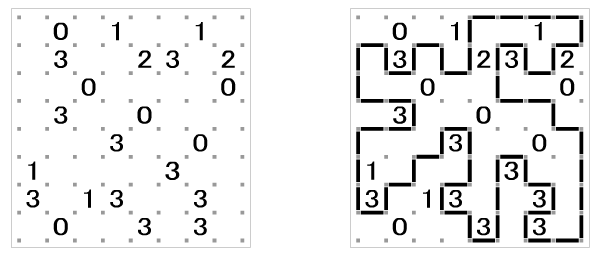
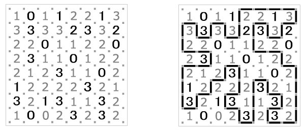

Home Page
F.A.Qs
Statistical Charts
Past Contests
Scheduled Contests
Award Contest
| Online Judge | Problem Set | Authors | Online Contests | User | ||||||
|---|---|---|---|---|---|---|---|---|---|---|
| Web Board Home Page F.A.Qs Statistical Charts | Current Contest Past Contests Scheduled Contests Award Contest | |||||||||
|
Language: Slink
Description Slitherlink is a puzzle published by Nikoli, the Japanese company that popularized Sudoku. Slitherlink puzzles are gaining momentum, and books of Slitherlink puzzles have started showing up around the world. The puzzles are simple to understand, but can be challenging to solve. The puzzle is simply a rectangular grid of dots that forms a collection of cells, every cell being either blank or containing an integer from zero to three. The challenge is to connect the dots with line segments to form a cycle (a connected path such that every vertex has precisely two incident edges), in such a way that every cell with a value has exactly the number of incident edges as the digit it contains. Cells with no value may have any number of incident edges. A valid Slitherlink puzzle always contains sufficient non-empty cells to guarantee a unique solution. Below is an example from the Nikoli web site of a Slitherlink puzzle and its solution.  It was shown by Takayuki Yato at the University of Tokyo that the general Slitherlink problem is NP-complete. (If you are not familiar with this concept, informally it means there is no "efficient" algorithm to solve the problem.) With a slight modification and some simple heuristics, however, programmatic solutions are possible. Our new puzzle, which we will term Slink, differs from Slitherlink only in that the puzzle may not have empty cells. That is, every cell must specify the number of incident edges. Below is the Slitherlink puzzle above converted to Slink (the added numbers are shown in gray). Note that the solution does not change, only the information given in the puzzle itself.  The heuristics for solving Slink arise from the nature of the puzzle itself. For example, consider a cell containing a zero. There must be no incident edges, therefore all edges incident to all zeros can be immediately removed from consideration as part of the solution path. Consider a three next to a zero. Because all the edges incident to the zero will be eliminated, the common edge shared with the three is also eliminated. But that leaves only three edges around the three, and therefore those three edges must be part of the solution path. The following table specifies the heuristic rules that must be properly applied to solve a Slink puzzle. The "x" characters between vertices mark edges that are not part of the solution path, while line segments between vertices mark edges that form part of the solution. Grey elements are the pattern the rule is based on, black elements indicate the additional edges that should be included or excluded if the rule is matched. Note that the pictured examples are for demonstration purposes only and do not illustrate every possible arrangement of the stated rule!
Input The input for this problem is a set of Slink puzzles to be solved. The first line of a Slink problem's input contains two integers, r and c, separated by a space, the number of rows and the number of columns in the puzzle. The next r rows of the input contain c integers, space delimited, valued from 0 to 3, which specify the content of the puzzle. The minimum dimension of a puzzle is 2 by 2 cells, and the maximum dimension is 20 by 20 cells. It is guaranteed that a unique solution to every input puzzle exists and can be determined with the above rules if a rule is always applied when it can be applied. A line with values of zero for r and c marks the end of the input. Output The output for this problem is a graphical representation of the Slink puzzle solution. The first data set is 1, the second data set is 2, etc. On a line by itself display the data set number, followed by the solution in exactly the format demonstrated below. Vertical edges are output as the vertical bar '|' character, horizontal edges are output as dash '-' characters, vertices where the path changes direction are output as plus signs '+', and cell numbers are always displayed with a blank to the left and to the right. Further, surround the entire output with a border made up of hash marks '#' such that the number in the upper left cell of the puzzle always occurs four positions to the right of the border and three position below the border, and the number in the lower right cell always occurs four positions to the left of the border and three positions above the border. Sample Input 8 8 1 0 1 1 2 2 1 3 3 3 3 3 2 3 3 2 2 2 0 1 1 2 2 0 2 3 1 1 0 1 2 2 2 1 2 3 1 1 0 2 1 2 2 2 2 3 2 1 3 2 1 3 1 1 3 2 1 0 0 2 3 2 3 2 6 6 0 0 1 1 0 0 0 2 2 2 2 0 1 2 0 0 2 1 1 2 0 0 2 1 0 2 2 2 2 0 0 0 1 1 0 0 2 2 2 2 2 2 3 5 3 3 3 2 3 1 2 1 3 2 3 3 2 2 2 0 0 Sample Output 1 ##################################### # # # +---------------+ # # 1 0 1 1 | 2 2 1 3 | # # +---+ +---+ | +---+ +---+ # # | 3 | 3 | 3 | 3 | 2 | 3 | 3 | 2 # # | +---+ +---+ | +---+ # # | 2 2 0 1 1 | 2 2 0 # # +-------+ +-------+ # # 2 3 | 1 1 0 1 2 | 2 # # +-------+ +---+ +---+ # # | 2 1 2 | 3 | 1 1 0 2 | # # | +---+ | +---+ | # # | 1 2 | 2 2 | 2 | 3 | 2 1 | # # | +---+ +---+ | +---+ | # # | 3 | 2 1 | 3 1 | 1 3 | 2 | # # +---+ +---+ | +---+ | # # 1 0 0 2 | 3 | 2 | 3 2 | # # +---+ +-------+ # # # ##################################### 2 ############################# # # # # # 0 0 1 1 0 0 # # +-------+ # # 0 2 | 2 2 | 2 0 # # +---+ +---+ # # 1 | 2 0 0 2 | 1 # # | | # # 1 | 2 0 0 2 | 1 # # +---+ +---+ # # 0 2 | 2 2 | 2 0 # # +-------+ # # 0 0 1 1 0 0 # # # # # ############################# 3 ############# # # # +-------+ # # | 2 2 | # # | | # # | 2 2 | # # +-------+ # # # ############# 4 ######################### # # # +---+ +---+ +---+ # # | 3 | 3 | 3 | 2 | 3 | # # | +---+ | | | # # | 1 2 1 | 3 | 2 | # # | +---+ +---+ | # # | 3 | 3 | 2 2 2 | # # +---+ +-----------+ # # # ######################### Source |
[Submit] [Go Back] [Status] [Discuss]
All Rights Reserved 2003-2013 Ying Fuchen,Xu Pengcheng,Xie Di
Any problem, Please Contact Administrator